Math#
Key Formula#
Entropy#
#todo
Common Distribution#
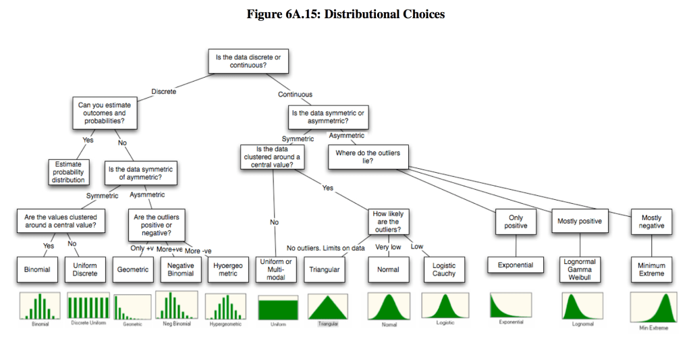 source from: Types of Continuous Probability Distribution?
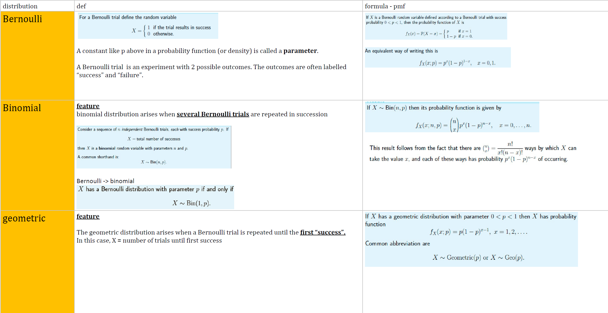
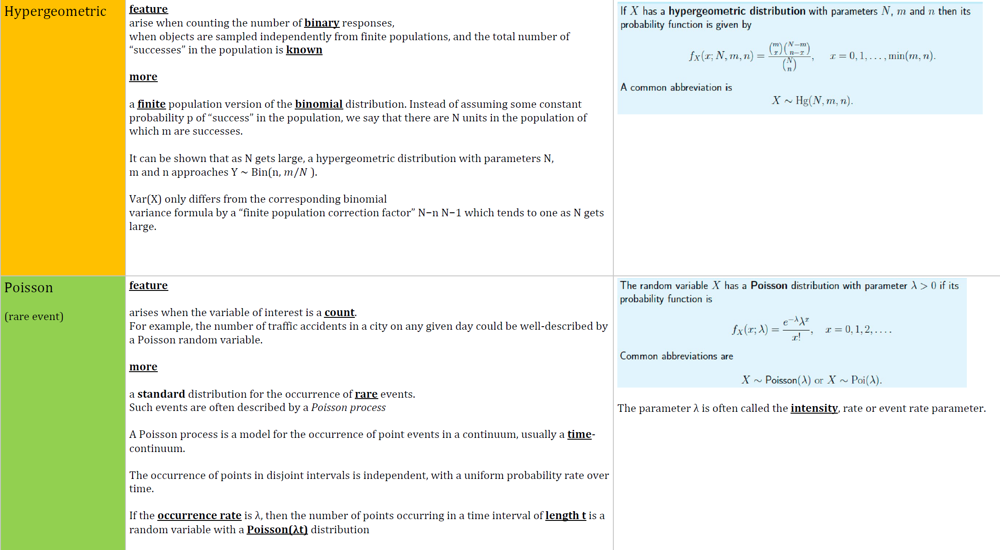
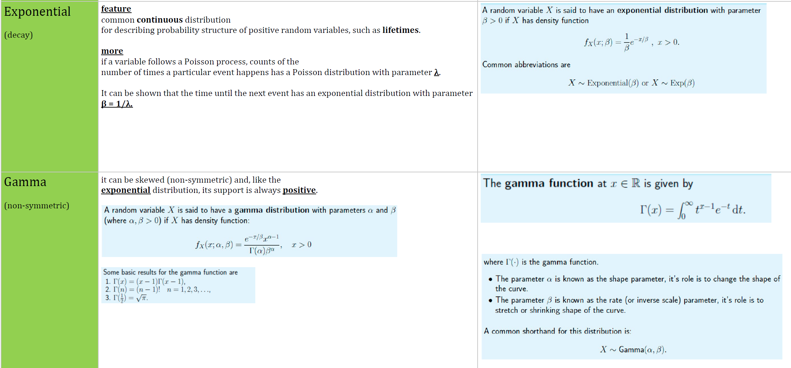
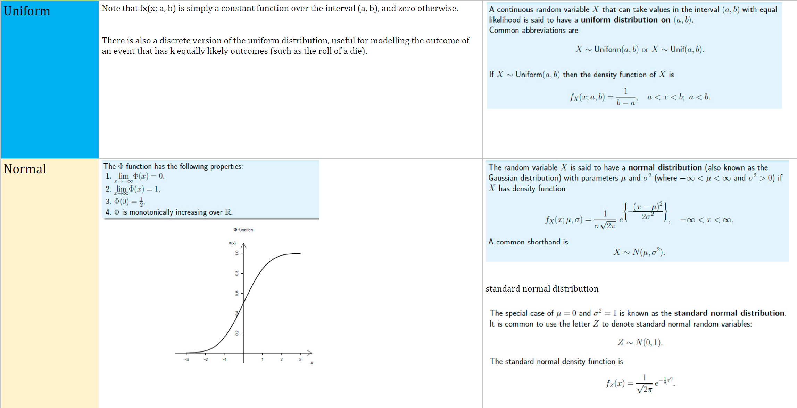
Multinomial
#notes Extension on the bi-nomial dist 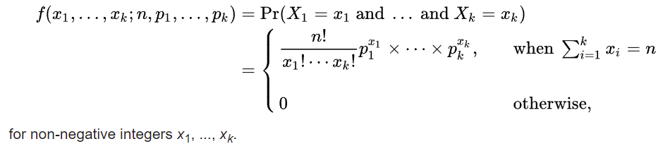
#todo
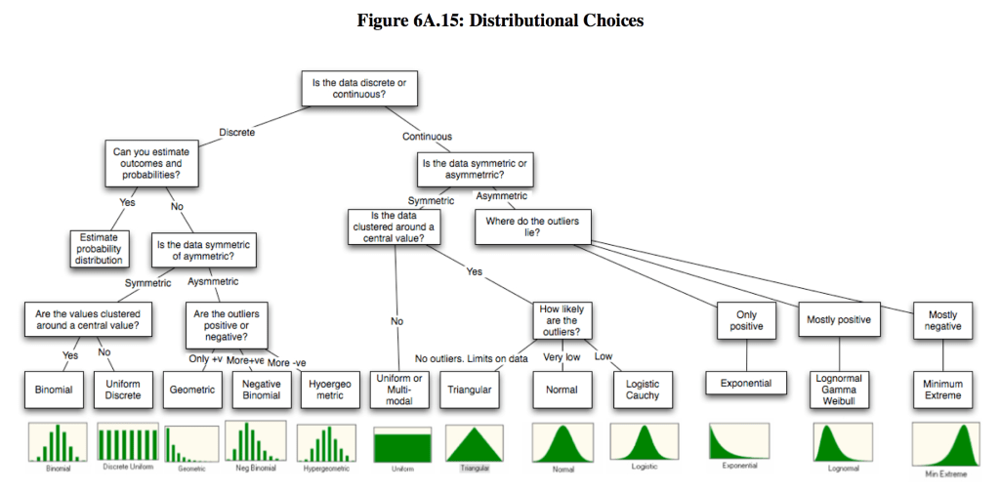 source from: Types of Continuous Probability Distribution?
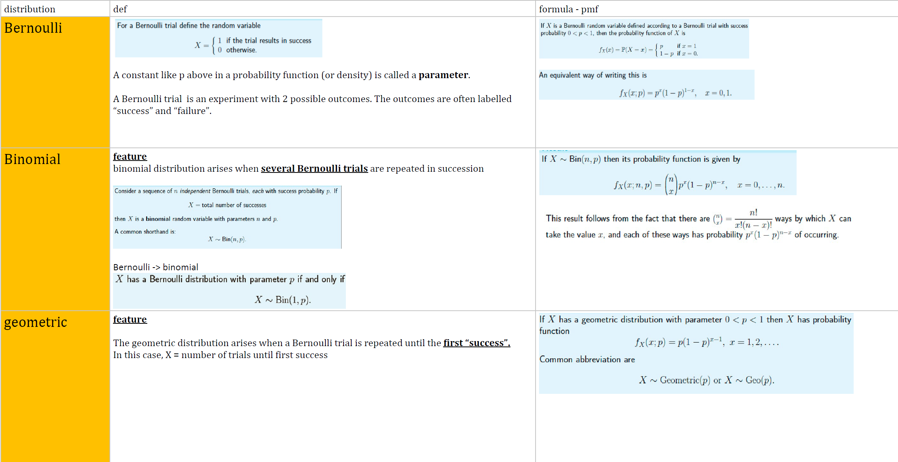
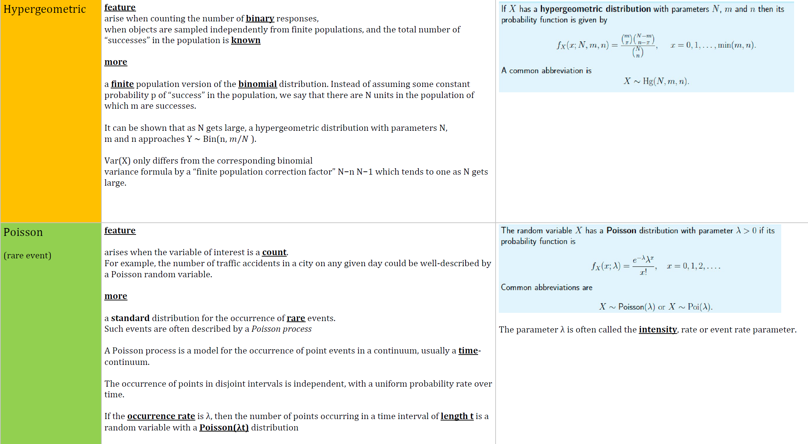
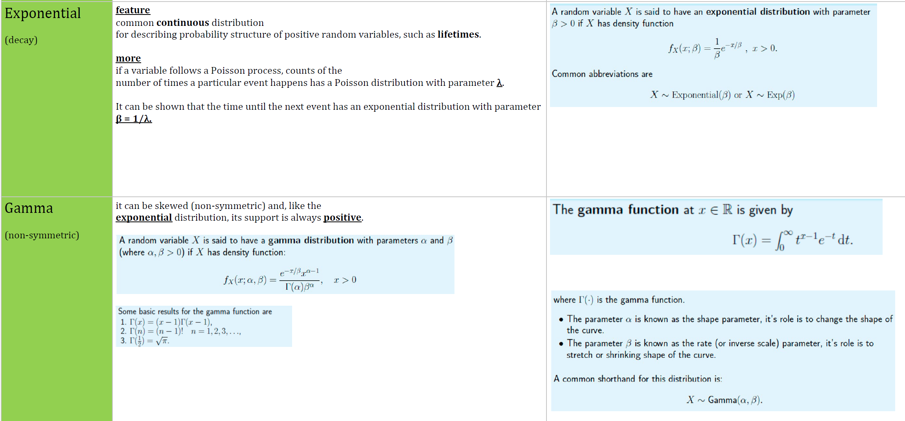
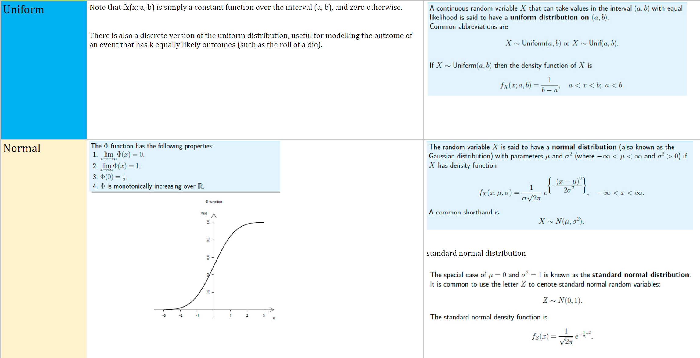
Multinomial
#notes Extension on the bi-nomial dist 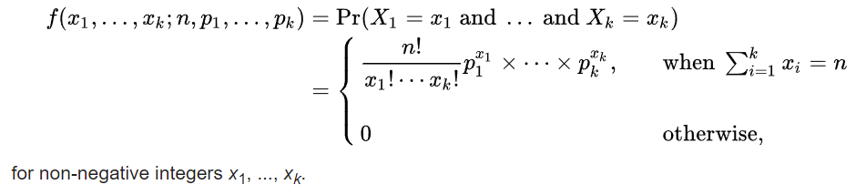